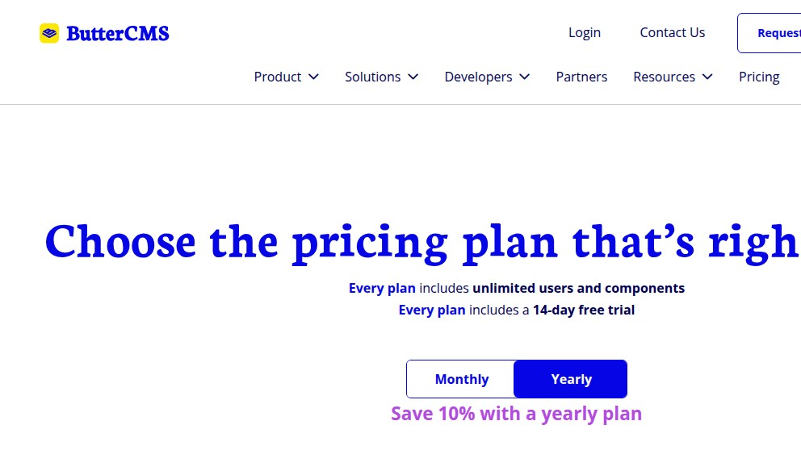
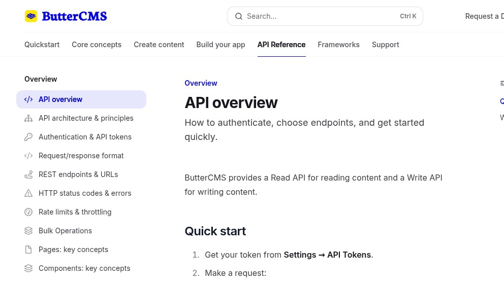

ButterCMS: the marketing-page CMS that actually publishes its prices
ButterCMS is the headless CMS you reach for when the project isn't headless-first. It's a Texas-based SaaS pitched at marketing pages bolted onto an app you already shipped — a blog, a press section, a careers page, a "what's new" feed — and almost nothing else. The interesting thing about ButterCMS in May 2026 isn't the feature list; it's that the entire scouting flow that breaks against vendors like Contentstack or Sitecore (no public price, no self-serve trial, sales-call gate) just works here. The pricing page has numbers. The free plan exists. The Read API answers your curl in 113 ms and tells you exactly which token you got wrong. That's worth a scouting note.
We're the team behind SimpleReview, a Chrome extension that drafts code-fix PRs on whatever element you click on a broken admin or storefront. We are not affiliated with ButterCMS, not partners, not paying customers. This page is a scouting note from one real evaluation session on 2026-05-07: public pricing page, public docs, the actual api.buttercms.com Read API hit with a real curl. We did not sign up for the trial. If we got a number wrong, open a GitHub issue and we'll fix it.
The pricing page is, refreshingly, a pricing page
Open https://buttercms.com/pricing/ on a Tuesday afternoon and you get what a developer comparison spreadsheet actually needs: a tiered table, a free row, monthly numbers next to a yearly toggle that drops the price 10%, and a clear free-trial line. After spending the previous week trying to extract numbers out of Contentstack and Sitecore demo-request forms, this is the bar we'd want every vendor to hit.

https://buttercms.com/pricing/ via headless Chrome at 992×558. Headline reads "Choose the pricing plan that's right"; the page advertises a 14-day free trial on every paid tier and a 10% yearly discount.The published tiers (monthly / yearly-effective):
| Tier | Price | API calls / mo | Bandwidth | Caps that bite |
|---|---|---|---|---|
| Free | $0 | 50K | 100 GB | 5 Pages, 50 Blog posts, 50 Collections, 500 Assets, 2 Roles |
| Basic | $71 / $63.90 | 100K | 250 GB | 20 Pages, 100 Blog posts, 100 Collections, 1K Assets, image editing |
| Advanced | $224 / $201.60 | 500K | 500 GB | 50 Pages, 500 Blog posts, 500 Collections, 2K Assets, 3 Roles |
| Professional | $359 / $323.10 | 1M | 1 TB | 100 Pages, unlimited posts, 1K Collections, 3K Assets, 3 Locales |
| Enterprise | Custom | Custom | Custom | SLA, dedicated support, migration help |
The shape of the table is itself a thesis. Notice what isn't a paywall: users. Every tier has unlimited seats. The thing that meters is API calls and content volume — i.e., how big the site you're publishing is, not how big your team is. That's the right shape for a CMS pitched at "the marketing team needs to edit the homepage without redeploy" — you want every editor on the plan, you don't want to shop for seat counts.
The thing that does bite is the per-tier object cap. Five Pages on the free plan is enough to evaluate the editor; 20 on Basic is enough for a small marketing site; the jump to 50 on Advanced ($224/mo) is where a real product site starts to live. If you're picking ButterCMS for a docs-heavy site, run a count: a SaaS landing page, pricing, about, careers, contact, plus 30 blog posts already eats a Basic plan and pushes you onto Advanced fast.
One real call against the Read API
The pricing page is one signal; the production API is the other. ButterCMS exposes its Read API on api.buttercms.com behind Heroku and Varnish. You can hit it without an account and observe the real behaviour — you'll just get an authentication error, but the error itself is documentation:
$ curl -sI \
"https://api.buttercms.com/v2/posts/?auth_token=invalid_token_test"
HTTP/2 401
allow: GET, POST, HEAD, OPTIONS
content-type: application/json
www-authenticate: Token
server: Heroku
via: 1.1 heroku-router, 1.1 varnish, 1.1 varnish
x-served-by: cache-iad-kcgs7200170-IAD, cache-bma-essb1270047-BMA
x-cache: MISS, MISS
vary: origin
access-control-allow-origin: *
referrer-policy: same-origin
x-content-type-options: nosniff
x-frame-options: DENY
strict-transport-security: (via Heroku edge)
content-length: 27Body of the response, verbatim:
{"detail":"Invalid token."}Five things this tells you in one round trip. One: www-authenticate: Token means it's Django REST Framework's TokenAuthentication under the hood. The error shape ({"detail": "..."}) is the DRF default. That's not a guess — it's the literal fingerprint. Two: Heroku origin behind Varnish ("via: 1.1 heroku-router, 1.1 varnish, 1.1 varnish") with Fastly-style POPs ("cache-iad", "cache-bma") means this is hosted on Heroku with Fastly out front. Three: vary: origin + access-control-allow-origin: * means CORS is wide open for browser calls — you can fetch from any domain, which fits the "drop a JS snippet on the marketing site" use case. Four: x-frame-options: DENY on the API itself is a low-stakes belt-and-braces touch. Five: x-cache: MISS on a 401 means the Varnish layer doesn't cache auth failures — correct, but not always what vendors get right.
Hit the API root with no path:
$ curl -s "https://api.buttercms.com/v2/"
{"sitemap":"https://api.buttercms.com/v2/sitemap",
"posts/search":"https://api.buttercms.com/v2/posts/search",
"posts":"https://api.buttercms.com/v2/posts",
"pages":"https://api.buttercms.com/v2/pages",
"search":"https://api.buttercms.com/v2/search",
"authors":"https://api.buttercms.com/v2/authors",
"categories":"https://api.buttercms.com/v2/categories",
"tags":"https://api.buttercms.com/v2/tags"}That's a HATEOAS-style root — DRF's DefaultRouter behaviour — and it tells you the entire surface of the Read API in a single GET. Eight resources: sitemap, posts, post search, pages, global search, authors, categories, tags. No GraphQL, no introspection endpoint, no field-selection query syntax. Just nouns. If you've used WordPress's REST API or any Django-shaped backend, this is exactly the surface you'd expect, and you can model it in your client in twenty minutes.
The error JSON shape ({"detail":"Invalid token."}) is the same shape as a missing-token error ({"detail":"Incorrect authentication credentials."}) and the same shape any DRF endpoint anywhere returns. Your error-handling code for ButterCMS is the same code you'd write for any DRF API. That's not "bland" — that's the tax stay-low signal. Boring infrastructure is the kind that doesn't surprise you at 3am.

buttercms.com/docs/api/, captured 2026-05-07. Note the docs sidebar names every concept a developer needs upfront — "HTTP status codes & errors", "Rate limits & throttling", "Authentication & API tokens" — at one click depth.Per the public docs the Read API speaks 2xx for success, 400 for validation, 401 unauthorized, 404 not found, 429 rate-limit-exceeded with a Retry-After header, and 500 for server errors. Authentication is a single token passed either as ?auth_token=... in the query string or Authorization: Token ... in the header — Read tokens are public-safe, Write tokens are server-only. That's a clean split and matches the threat model: a Read token in your front-end JS is by design (rotate it if leaked), a Write token is not.
The angle: it's a marketing-page CMS, not a headless-first one
ButterCMS markets itself as "the headless CMS for marketing-driven teams." Read that literally. The product is shaped for the case where you have a SaaS app already shipped — a Next.js or Rails or Laravel front end — and you want to bolt on the surfaces that the marketing team needs to own without filing engineering tickets. Blog. Press. Careers. Customer stories. A "what's new" page. Each of those is a content type in their model; each renders as a route on your app via their SDK; each is editable by a non-engineer.
This is a different shape from the headless-first players. DatoCMS and Storyblok start from "the entire site is content," with visual builders and structured content modelling pitched as the core surface. Contentstack and Sitecore start from "the entire enterprise's content stack," with workflow, localization, and governance as the core surface. ButterCMS starts from "the parts of your already-built app that the marketing team wants to edit." The pricing reflects this — bandwidth and API-call meters scale with traffic to those marketing pages, not with team size or content-modelling complexity.
The trade is real. If you want to model your entire product catalog in a CMS — every SKU, every variant, every landing page across 12 locales — ButterCMS will work, but the per-tier caps (50 Collections on Free, 100 on Basic) will push you up the price ladder fast and the lack of GraphQL or field-selection means you're paying API-call quota for fields you're not using. If you want to publish a blog and keep your engineers out of every press-release deploy, ButterCMS is the smaller, faster choice.
Honestly, next to DatoCMS, Storyblok, Strapi, Directus
| Dimension | ButterCMS | DatoCMS / Storyblok | Strapi / Directus (self-host) |
|---|---|---|---|
| Public free tier | Yes — 50K calls / 100GB / 5 pages | Yes (Dato free, Storyblok free) | Free forever — your hardware |
Time to first curl |
Sign up → copy token → ~5 min | Sign up → copy token → ~5 min | docker run → ~10 min |
| Query language | REST only (filters via query params) | GraphQL + REST | REST + GraphQL plugin |
| Visual builder | Page Components (a section model) | Visual Editor (Storyblok), Modular blocks (Dato) | BYO via plugins / custom UI |
| Seats | Unlimited on every tier | Tiered seats (per project) | Whoever has SSH access |
| Pricing entry point | $71/mo Basic | ~$59/mo Dato Pro / ~$99/mo Storyblok Entry | $0 + your time |
| Lock-in | Medium. Content lives on their stack; export via API. | Medium. Same shape. | Low. Postgres dump = your data. |
| Best for | Marketing pages bolted onto an existing app | Headless-first sites + structured content | Teams that want to own the stack |
None of this is a verdict. The honest framing: if your product is a SaaS app and you want a marketing CMS that the team can use without engineering, ButterCMS is the lowest-friction option in the table. If your product is the content (a magazine, an e-commerce catalog, a documentation site), the headless-first players give you better tooling for the work. If you have engineers who'd rather own the database than own a renewal contract, self-hosting Strapi or Directus is still the right call.
Things we'd change
- Surface the rate-limit numbers in API responses. The docs say 429s come with
Retry-Afterheaders — good — but a per-second / per-month budget exposed asX-RateLimit-Remainingon every 200 would let clients self-throttle without polling a status endpoint. - Publish a per-API-call price for over-quota usage. Right now hitting the call cap means you upgrade the plan. Some tier with metered overage ($X per 100K extra calls) would let teams handle a launch-day spike without a plan change.
- Ship GraphQL. The DRF-shaped REST is fine, but on a $359/mo tier with a 1M call budget, a single page-render asking for one entry plus its author plus its category is three round trips when it could be one.
- Don't change the error JSON shape.
{"detail": "Invalid token."}is boring and predictable and that is why we like it.
What we'd actually do
If we had a SaaS shipping in three weeks and the founders wanted a blog + careers page they could edit without a deploy, we'd put ButterCMS on the shortlist with WordPress headless and Ghost. The 14-day trial is enough to evaluate the editor with a real writer, the SDK is a one-liner in Next.js, and the $71 Basic plan is roughly the price of a small Heroku dyno — i.e., not a budget conversation. If we had a content-first product (a publication, a docs site, a catalog), we'd start with DatoCMS or Storyblok for the structured-content tooling, or self-host Directus for the SQL-first model.
Where this fits
Adjacent scouting notes from the same week: Contentstack — behind the "Contact us" wall, DatoCMS — structured content that publishes its prices, Strapi — the open-source headless default, Directus — SQL-first with a real admin, Ghost — the headless-blog wedge. SimpleReview is the Chrome extension that turns whatever element you click on a broken admin or storefront into a draft code-fix PR — it works on a ButterCMS-rendered marketing page the same way it works on a Strapi one, because by the time the page renders it's just HTML.
Demo: SimpleReview on a ButterCMS issue